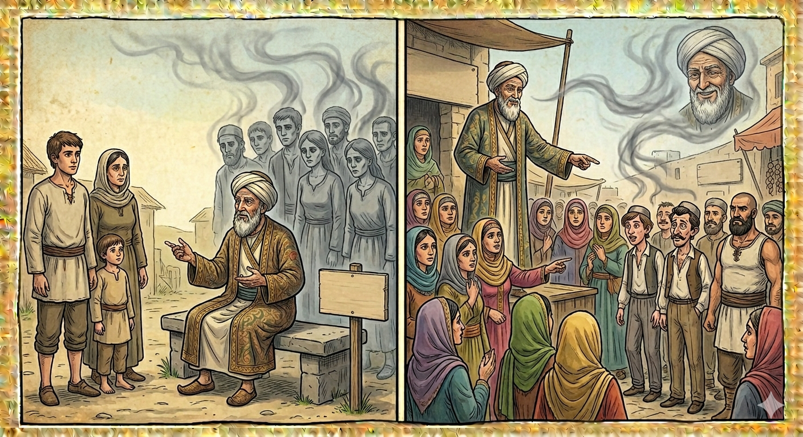

И.А. Дахкильгов. Хьехаме дувцарш - поучительные рассказы-притчи.
И.А. Дахкильгов. Хьехаме дувцарш - поучительные рассказы-притчи. Из ингушского фольклора.

ДукхагӀа малаш хургба?
Цхьа саг хиннав Далла шийна дукха хьаькъал денна. Шоай хатта хӀама хилча, из волча ухаш, цунгара хьаькъал эцаш, хиннаб нах. Иштта цунга хӀама хатта вахав из волча цхьа къонах. - Боккъала алалахь, - дийхад цо, - укх дуне тӀа мел беннарш а дӀалаьрхӀача, тахан дийнабараш а лаьрхӀача, дукхагӀа малаш хургба царех? Кхалбараш а лаьрхӀача, маӀабараш а лаьхӀача, царех а малаш хургба кӀезигагӀа е дукхагӀа? - Беннарш дукхагӀа ба хьона, - аьннад, - хӀана Ӏа яхе, дийна боллашехьа а бенна дукха нах болаш хилар бахьан долаш да хьона. Кхал-маӀа Ӏа хетте, кхалбалараш, даьсар, дукхагӀа ма-б, хӀана аьлча, цар оамалаш йоахкаш дукха ба хьона хачеш лелаеш, шоаш къонахий ба яхаш бола нах.
РУССКИЙ
Кого больше?
Жил некогда Всевышним одаренный мужчина. Он давал мудрые советы, и поэтому люди ходили к нему за советами. Как-то пришли к нему и спросили: - Скажи, если считать отдельно мертвых и живых, то кого из них больше - мертвых или живых? И еще скажи: если считать отдельно мужчин и женщин, то кого больше на этом свете? Мудрец ответил: - Конечно же, умерших больше, потому что немало живых, которые уже при жизни стали мертвецами. Ну а насчет мужчин и женщин скажу: несомненно, женщин больше. Ведь не всегда тот мужчина, который ходит в брюках.
ENGLISH
Which one is there more of?
There once lived a man blessed by the Almighty. He gave wise counsel, and so people came to him for advice. One day, some people came to him and asked: 'Tell us, if we count the dead and the living separately, which group is larger—the dead or the living?' And tell us this too: if we count men and women separately, which group is larger in this world? The wise man replied: 'Of course, there are more dead people, because there are quite a few living people who have already become as good as dead whilst still alive. As for men and women, I would say that there are undoubtedly more women. After all, it is not always the man who wears trousers.'
НОХЧИЙН
ПОГОВОРКИ